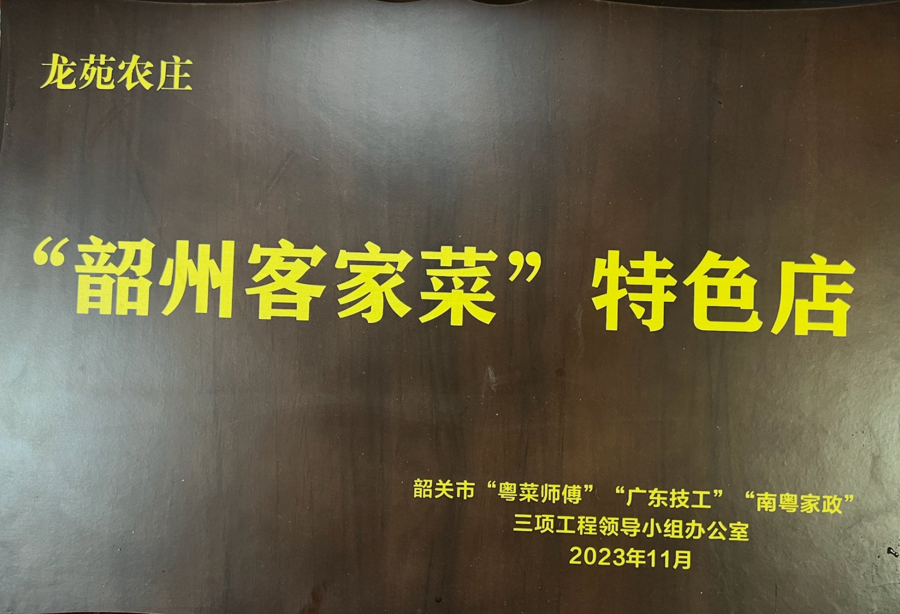

媒体认可
2018.2.24 CCTV《味道》专题 · 2025.12.8 广东卫视专访 · 官方美食认证

CCTV-10《味道》
2018年2月24日「央视科教《味道》」“记忆中的年味——韶关年味·韶关年味”专题报道
张细明、张海兴父子展示“石斛煲鸡”“炒宰相粉”“手工肉丸”


美食认证
2023年11月获韶关市“粤菜师傅”“广东技工”“南粤家政”三项工程领导小组办公室认定为“韶州客家菜”特色店，始兴隘子镇客家美食亮丽名片。
官方美食认证 📜 韶关市政府公示原文